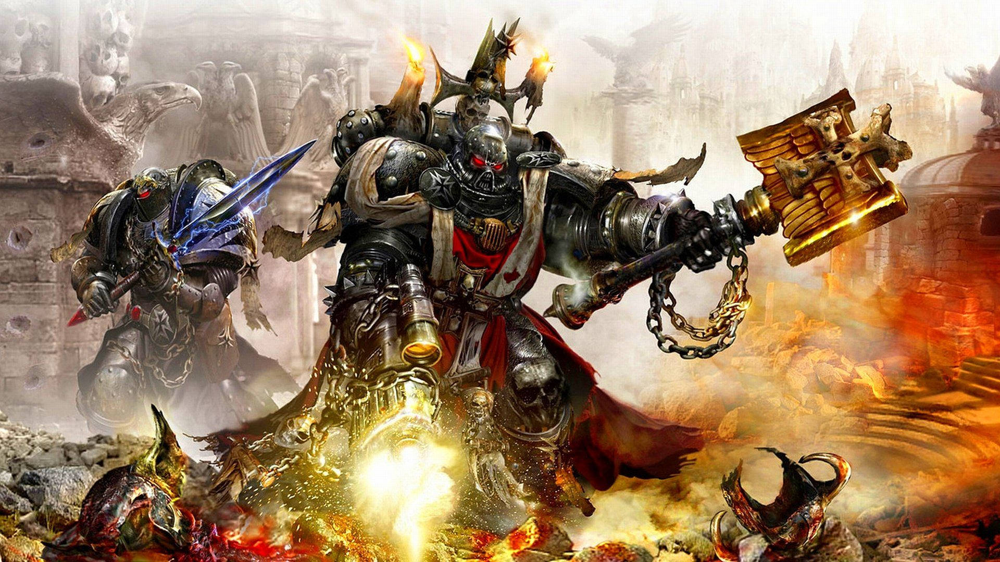

ALTO CAPELLÁN MEREK GRIMALDUS
El Capellán Grimaldus, veterano de una gran cantidad de exitosas cruzadas, fue promocionado de hermano de armas a conocedor de los misterios del Reclusiam tras las enconadas reyertas de las Cruzada de Vinculus. Su fe en el Emperador y su coraje eran tan grandes que no pasaron desapercibidos para los capellanes viendo en el joven Grimaldus un futuro sacerdote guerrero de gran poder.
Grimaldus fue llevado al Reclusiam después de la batalla del Fuego y la Sangre, en la que su estoicismo atrajo la atención del por entonces Reclusiarca Mordred, y tomó sus votos a bordo del Cruzado Eterno ante la espada rota de Rogal Dorn.
A diferencia de muchos de sus hermanos Capellanes, Grimaldus prefirió inspirar a sus hombres con hechos más que con retórica. En esas raras ocasiones cuando Grimaldus hablaba, su voz llamaba la atención de todos alrededor, la rareza de su discurso aseguraba que ni una palabra quedase sin ser escuchada. La oratoria de Grimaldus iba directa al corazón de sus Hermanos de Batalla y no fue motivo de sorpresa que tras la muerte de Mordred, el Reclusiarca proclamarse a Grimaldus como su sucesor empleando su último aliento.
Grimaldus muestra un celo tan grande al liderar a los Templarios Negros a la batalla que ha sufrido graves heridas ante las que su fe en el Emperador no le han dejado sucumbir. Tras un siglo de leal servicio, le fue otorgado el puesto de Reclusiarca y acompañó al Gran Mariscal Helbrecht a un Armageddon sumido en la peor de las guerras.
